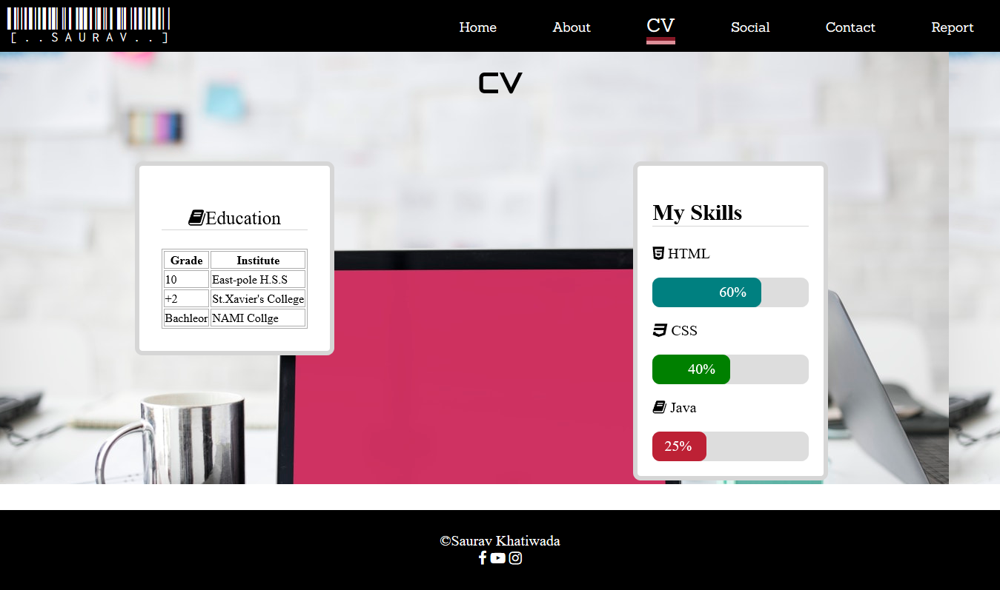

The ‘Web Development CV’ assignment gives emphasis on on demonstrating the web develepment skill by using HTML/CSS. Furthermore,it is the practical implementation of the lessons learned in this module which is from using collabarative platform like Github to the basics of web designing.Also,the project enforces responsive web design for better UI.
For the successful completion of the project six webpages are to be made ,which follows all the given outlines and these are the following webpages to be included in the website:
I)Index-The home/landing page.
II)About-Biography and aspiration
III)CV-Experiences and skills
IV)Contact-Contact form and Google Maps
V)Social-Link to the social media accounts
VI)Report
The following two personal websites being minimalistic yet highly effective ,have huge influence over this project:
These wireframe provide the basic blueprint for the whole project.
The index page contains background image from Pexels(https://pexels.com) and the avatar used is from IconFinder(https://iconfinder.com).Also,javascript is used across the whole website to create a dropdown menu,and to add depthness to the nav bar.
Similarly,the icons used at footer is from(https://fontawesome.com) which is used all over the project and neon lights animation is added to the WELCOME text through the available resources( https://cssreset.com/create-glowing-neon-text-using-css3/)
The skill is created by the help of given resources at W3 school.(https://www.w3schools.com/howto/howto_css_skill_bar.asp)

Hence , this states the successful completion of the project.The created web pages are met with modern day needs.It has fulfilled the required conditions from minimalistic approach ,responsive web design and it's code validation. The approach and design for the project was searched and surfed across the internet,gathered and placed into one.For which (pexels.com) stood as a best option for images ,(w3schools.com) provided the needed resources and (google.design) helped from color combination ,fonts to the web approach.
Therfore, this demonstrated skill can certainly ensure a better approach and method towards the better web designing.